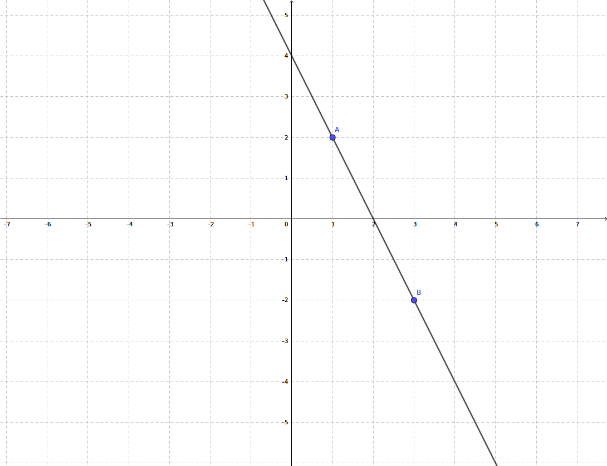

Scegli di seguito quale formula e i relativi esempi desideri guardare
LE RETTE GENERICHE
Una retta generica è una retta che ha come incognite sia la x che la y, a differenza di una parallela ad un asse dove solo una delle due coordinate è risaputa e costante. Tutti i punti presenti su questo genere di retta posseggono quindi entrambe le coordinate varibili.
La retta seguente è un esempio di retta generica.
Come possiamo notare essa non è parallela ad un asse.
(Continua a leggere per sapere some si rappresenta una retta di questo tipo)
LA RAPPRESENTAZIONE DI UNA RETTA IN FORMA ESPLICITA
Una retta generica si può rappresentare in forma esplicita con la formula y = mx + q, dove 'm' è il coefficiente angolare, cioè un numero che dipende dall'angolazione della retta e che quando è positivo indica che essa forma un angolo minore di 90° con l'asse delle ascisse alla sua destra nel primo quadrante, oppure un angolo minore quando è negativo, e dove 'q' indica la coordinata sulle ordinate del punto sulla retta che si interseca con l'asse delle y.
Per poter rappresentare graficamente una retta generica di equazione esplicita dobbiamo inventarci un numero a nostro piacimento, sostituirlo alla x presente nell'equazione e risolvere quest'ultima; in questo modo abbiamo trovato le coordinate di un punto che si trova sulla retta, dove il numero inventato è la x e il risultato dell'equazione è la y. Ripetendo due volte questo procedimento, con un altro numero a piacere, troveremo anche il secondo punto; da quel momento potremo infine rappresentare la retta graficamente.
Per rappresentare ad esempio la retta di equazione y = 3x + 2 dobbiamo prima creare la seguente tabella,
dove le x sono i numeri inventati e le y i risultati delle equazioni:
\(\begin{array}{c|lcr} x & \text{y} \\ \hline \color{blue} 3 & \color{green}11 \\ \color{blue} 1 & \color{green} 5 \end{array}\)
Avendo quindi trovato i due punti essenziali, A(3; 11) e B(1; 5), possiamo disegnarci la retta:
(Continua a leggere per sapere some si rappresenta in forma implicita una retta)
LA RAPPRESENTAZIONE DI UNA RETTA IN FORMA IMPLICITA
Una retta generica si può rappresentare anche in forma implicita con la formula ax + by + c = 0; In questo caso, come possiamo ben notare, troviamo tutti i termini in un solo membro e non abbiamo più il coefficiente angolare, cioè la 'm'. Possiamo tranquillamente trasformare questo tipo di equazione in esplicita, isolandoci quindi proprio l'incognita y; se non vogliamo trasformare l'equazione ma ci serve il coefficiente angolare, inoltre, possiamo calcolarcelo semplicemente con la seguente formula: \(\color{red}\frac{-a}{b}\).
Per poter rappresentare graficamente una retta generica di equazione implicita dobbiamo prima trasformarla in esplicita e, successivamente, trovarci i due punti essenziali secondo il procedimento spiegato precedentemente.
Per rappresentare ad esempio la retta di equazione 4x + 2y - 8 = 0 dobbiamo trasformarla in esplicita,
facendola diventare quindi y = - 2x +4, e risolverla con il procedimento classico, facendo quindi la tabella:
\(\begin{array}{c|lcr} x & \text{y} \\ \hline \color{blue} 1 & \color{green} 2 \\ \color{blue} 3 & \color{green} -2 \end{array}\)
Infine, avendo trovato i due punti essenziali A(1; 2) e B(3; -2), possiamo disegnarci la retta:
